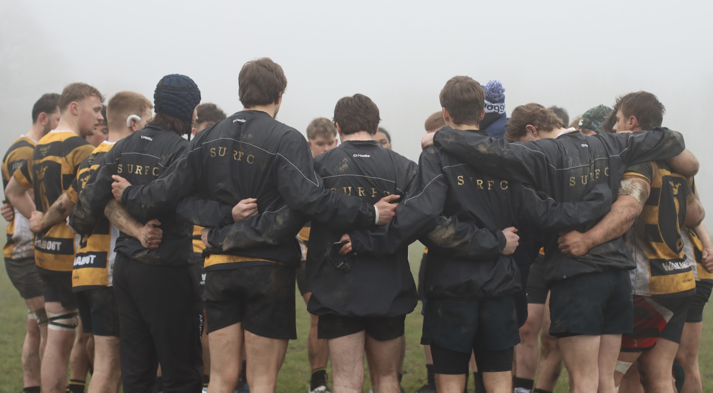
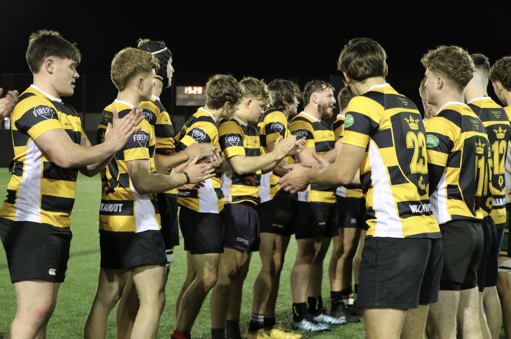
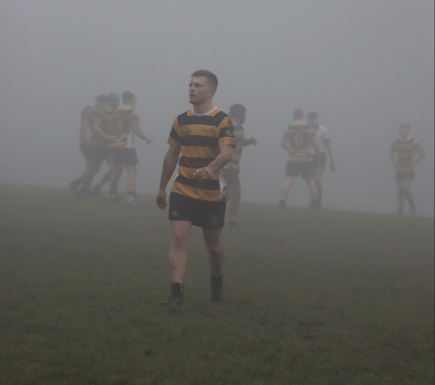

Scoreboard
1st XV Fixtures & Match Results
Last 5
-
{% for f in site.data.fixtures.last5 %}
- {{ f.result }}{{ f.opponent }}{{ f.score }} {% endfor %}
Next 5
-
{% for f in site.data.fixtures.next5 %}
- –{{ f.opponent }}{{ f.score }} {% endfor %}
Off the pitch
Upcoming Events
Stay up to date with whats occurring in the SURFC aside from BUCS fixtures
{% for e in site.data.events.items %}

{% endfor %}
On and off the pitch
Media Gallery
Showcasing our players in action, alongside what the SURFC gets up to off the pitch


